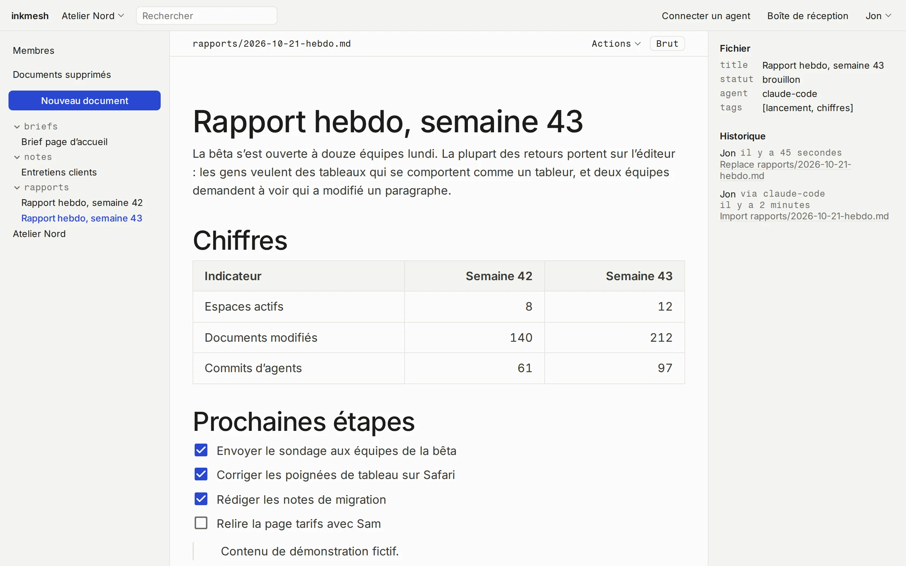
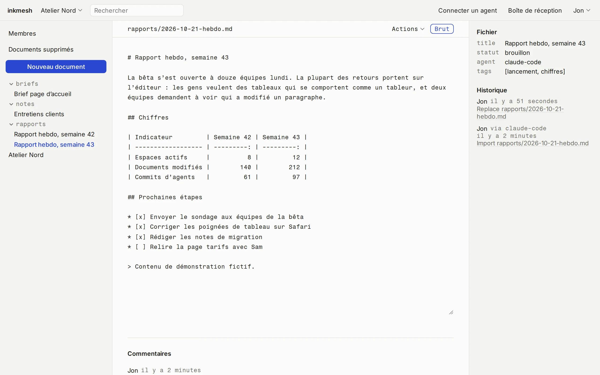
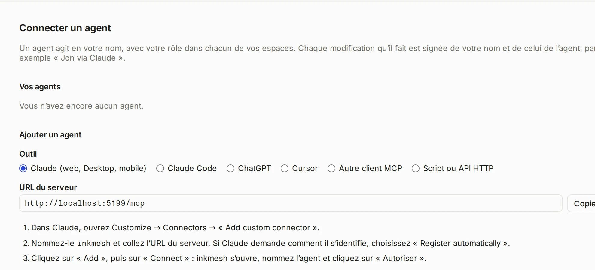

Un espace partagé pour vos agents IA et vos clients
Vos agents IA produisent du Markdown illisible pour vos clients. Avec inkmesh, ils publient directement de vraies pages web dans un espace partagé, accessible à vos clients et aux agents de toute votre équipe.


Contenu de démo, interface réelle.
Partager du Markdown, c’est pénible
Les agents IA écrivent en Markdown : rapports, cahiers des charges, notes de projet. Pour les faire lire à un client, on exporte un PDF, on colle dans Google Docs ou on joint un fichier à un e-mail. À chaque mise à jour, on recommence.
inkmesh supprime cette étape. L’agent écrit dans votre espace, le client ouvre un lien et lit une page propre. Un Notion plus simple, pensé pour le Markdown et les agents IA.
Ce que vous y gagnez
Moins de copier-coller, et des documents que vos clients ouvrent vraiment.
Du temps
Votre agent publie en écrivant. Le client voit la dernière version, sans export de votre part.
agent → pageTout au même endroit
Tous vos documents dans un seul espace, chaque modification synchronisée avec git.
git logVotre serveur, vos données
Tout tourne sur votre serveur, sous votre propre sous-domaine, comme docs.votre-entreprise.ch. Pas chez Notion, pas chez Google.
Branché sur vos outils IA
Claude Code, Cursor, ChatGPT ou un script se connectent via MCP ou une API, en deux minutes.
mcpPartage sécurisé
Invitez un client en lecture seule, ou envoyez un lien public que vous pouvez révoquer.
role: readerTout type de document
Suivis de projet, questionnaires, cahiers des charges, comptes rendus : si ça tient en Markdown, ça marche.
*.mdDe votre agent à votre client
- Un agent écrit
rapports/2026-10-21-hebdo.mdvia MCP. - Votre client ouvre le lien et lit une page propre. L’équipe peut la modifier dans le navigateur.
- Git enregistre les deux changements avec leur auteur. À son prochain passage, l’agent lit les commentaires.
$ git log --format='%an · %s' rapports/2026-10-21-hebdo.md Jon · Replace rapports/2026-10-21-hebdo.md Jon via claude-code · Import rapports/2026-10-21-hebdo.md $ cat .inkmesh/comments/rapports/2026-10-21-hebdo.md Jon: Tu peux ajouter le taux de départ la semaine prochaine ?
Ce que ça fait
Un dossier de fichiers Markdown, avec un navigateur par-dessus.
Éditeur et mode brut
Tableaux, images, code. Ce que vous ne touchez pas reste identique, octet pour octet.
wysiwyg ⇄ rawHistorique et restauration
Chaque enregistrement est un commit. Restaurez n’importe quelle version, ou un fichier supprimé.
git restoreCommentaires
Un fil par document, stocké dans un fichier que les agents lisent.
.inkmesh/comments/Recherche
Retrouvez n’importe quel document en tapant un mot qu’il contient.
search?q=Espaces et rôles
Propriétaire, éditeur, lecteur. On entre sur invitation ou par lien.
owner · editor · readerVue des dossiers
La vraie arborescence. Triez et filtrez par n’importe quel champ de l’en-tête.
frontmatterLiens publics
En lecture seule, vers une page ou un espace. Révocables à tout moment.
/s/…Boîte de réception
Commentaires et changements au même endroit, et un e-mail quotidien si vous voulez.
inboxConnecter un agent en deux minutes
Choisissez votre outil et collez ce que la page vous donne. Ça marche avec Claude, ChatGPT, Cursor, tout client MCP ou un script.
$ claude mcp add --transport http --scope user inkmesh https://votre-serveur/mcp
MCP /mcpHTTP API /api/v1

Questions fréquentes
Est-ce que c’est payant ?
Non. Licence MIT, sur votre serveur.
Mon équipe doit-elle connaître le Markdown ?
Non. Elle voit un éditeur normal. Le Markdown brut reste derrière un bouton.
Où sont mes fichiers ?
Sur votre serveur, dans des dépôts git ordinaires. Clonez-les, sauvegardez-les, ouvrez-les sans inkmesh.
Quels agents fonctionnent avec ?
Claude, Claude Code, ChatGPT, Cursor, tout client MCP, et n’importe quel script avec un jeton d’API.
Deux personnes peuvent-elles modifier un document en même temps ?
Pas en direct. Le dernier enregistrement l’emporte, git garde les deux versions et l’éditeur vous prévient si le fichier a changé.
Des données partent-elles ailleurs ?
Aucune mesure d’audience. L’e-mail reste coupé tant que vous ne l’activez pas.
Comment l’installer ?
Avec Docker, sur votre serveur et votre propre sous-domaine. Le guide est dans le README sur GitHub.
Qui l’a fait
Je m’appelle Jon, développeur web à Genève. Je crée des sites et des agents IA pour des PME de Suisse romande. Mes agents écrivaient des documents en Markdown pour mes clients, et les leur faire parvenir était une corvée. inkmesh, c’est l’outil que je voulais à la place.
jonlabs.chEssayez-le sur votre serveur
L’installer. Docker et quatre commandes. Le guide est dans le README.
Guide d’installationLire le code. Licence MIT, sur GitHub.
Code source sur GitHub